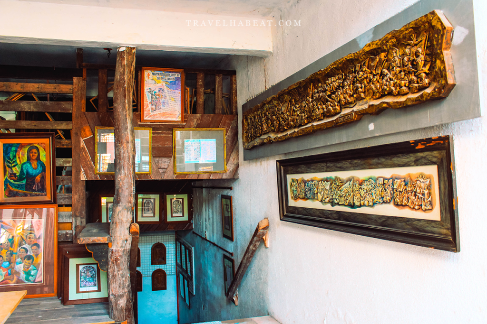
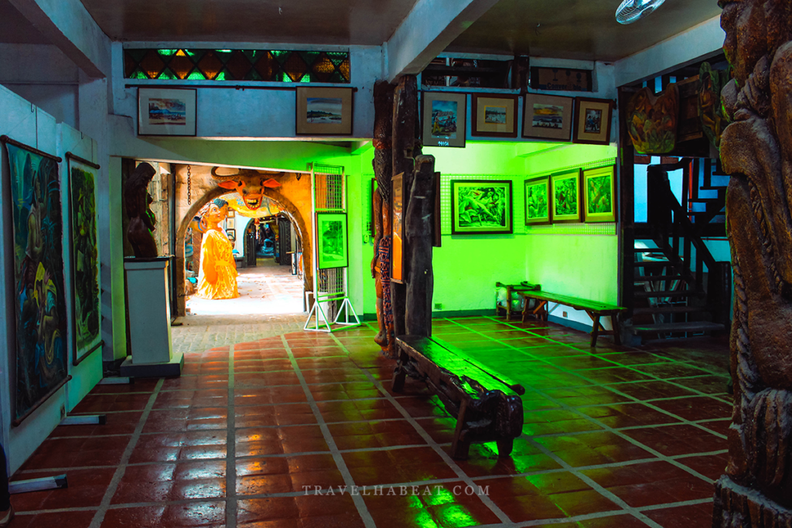
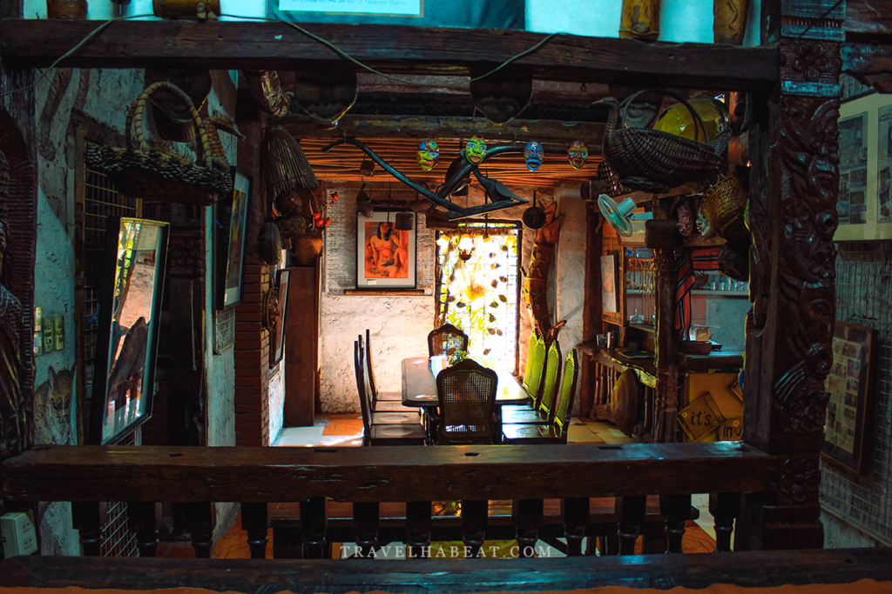
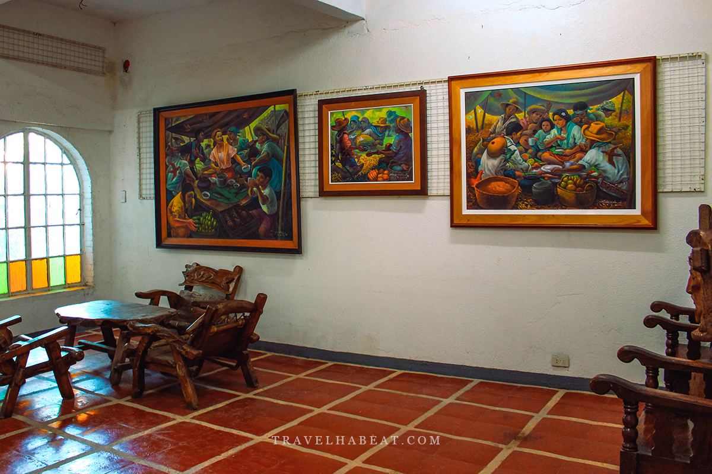

Location:
Doña Elena St., Itaas, Angono, Rizal.
Best for: Folklore Fans, Sculptors, and Local Mythologists.
Vibe: Rustic, Mythical, and Bold.


Nemiranda Arthouse
Exploring the "Imaginative Figurism" of Angono’s Master Storyteller.
Nemiranda Arthouse is the creative headquarters of Nemesio "Nemi" Miranda, a legendary figure in the Philippine art world. The structure itself is a work of art, built using local natural materials like bamboo, river stones, and aged wood to reflect a deep connection to the environment.
Doña Elena St., Itaas, Angono, Rizal.


